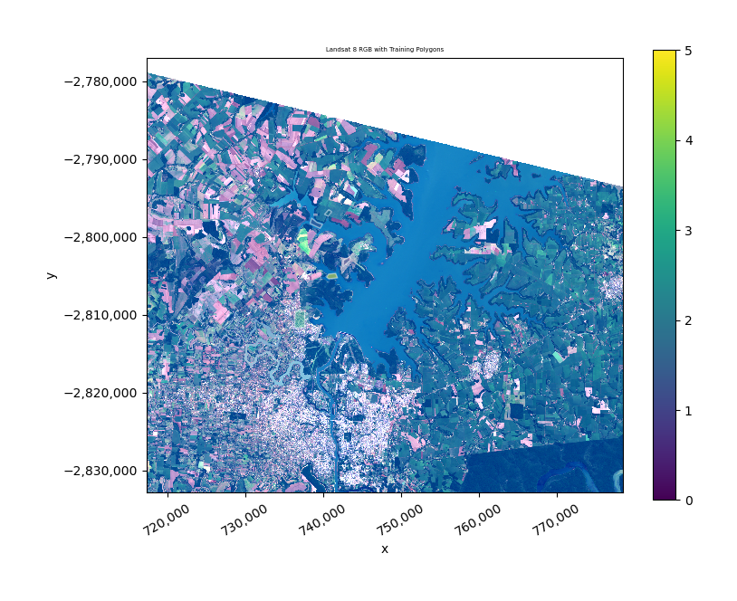
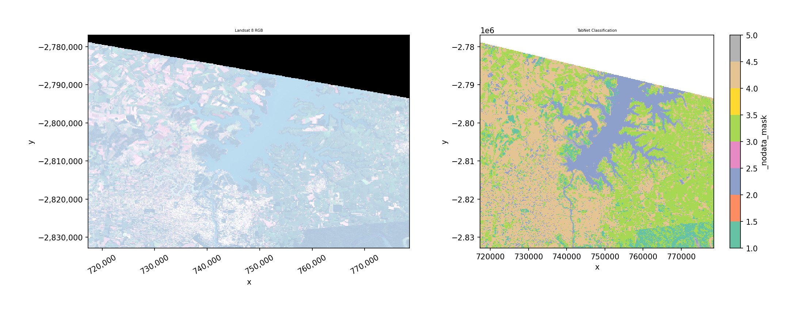
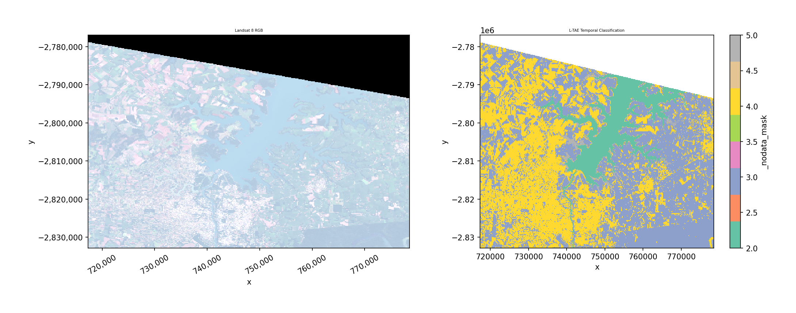
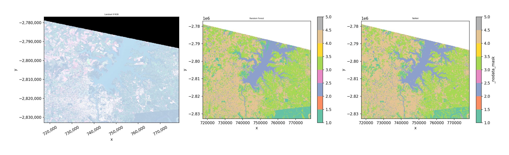
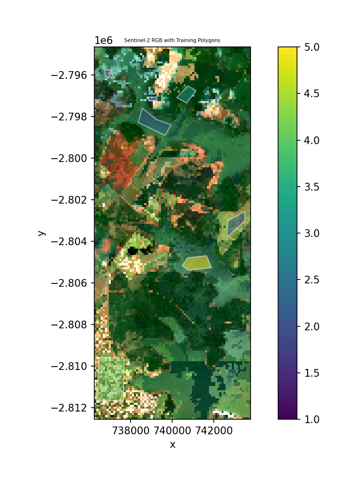
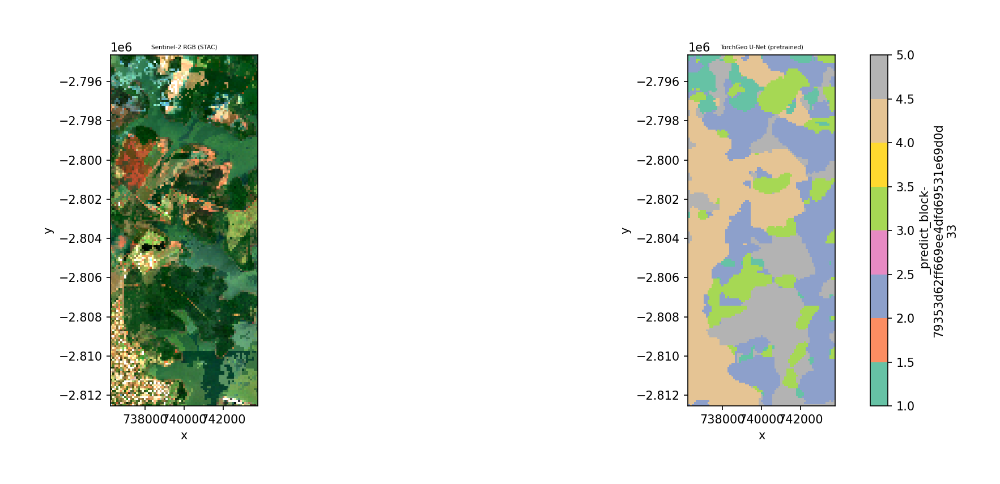

Deep learning classifiers#
GeoWombat provides deep learning classifiers that follow the same
fit() / predict() / fit_predict() API as the sklearn-based
classifiers in the Machine learning module. Three architectures are included:
Classifier |
Architecture |
Best for |
|---|---|---|
|
Attention-based tabular model |
Pixel-wise classification from spectral bands (single or multi-date) |
|
Lightweight Temporal Attention Encoder |
Satellite image time series (requires |
|
U-Net, DeepLabV3+, FPN segmentation |
Spatial-context classification with optional pre-trained encoders |
Setup and installation#
Install the deep learning dependencies:
pip install "geowombat[dl]"
This installs:
PyTorch (
torch>=2.0.0)pytorch-tabnet (
pytorch-tabnet>=4.0)TorchGeo (
torchgeo>=0.6.0)segmentation-models-pytorch (
segmentation-models-pytorch>=0.3.0)
GPU setup#
By default, classifiers run on CPU. To use a GPU, you need a CUDA-enabled PyTorch installation. The easiest way is to follow the official PyTorch Get Started page — select your OS, package manager, and CUDA version to get the correct install command.
For example, with pip and CUDA 12.4:
pip install torch --index-url https://download.pytorch.org/whl/cu124
To verify your GPU is available:
import torch
print(torch.cuda.is_available()) # True if GPU is ready
print(torch.cuda.device_count()) # Number of GPUs
print(torch.cuda.get_device_name(0)) # GPU name
Then pass device='cuda' or device='auto' to any DL classifier:
TabNetClassifier(device='cuda')
LTAEClassifier(device='auto') # auto-selects GPU if available
TorchGeoClassifier(device='cuda')
Prepare training labels#
All examples below use the bundled Landsat 8 test image and training polygons.
import warnings
warnings.filterwarnings('ignore')
import matplotlib.pyplot as plt
import geopandas as gpd
import numpy as np
import geowombat as gw
from geowombat.data import l8_224078_20200518, stac_training
from geowombat.ml import fit, fit_predict, predict
# Load training polygons (integer 'lc' column, EPSG:4326)
labels = gpd.read_file(stac_training)
print(f"Classes: {sorted(labels['lc'].unique())}")
print(f"Number of classes: {labels['lc'].nunique()}")
{kind=link}

TabNet#
TabNet is an attention-based model for tabular data. Each pixel is treated as a sample with spectral bands as features. It works on single-date or multi-date imagery (bands are flattened to features).
n_classes is automatically inferred from the label column — you never
need to specify it. Features are standardized internally before training.
Key parameters:
max_epochs: Training epochs (default 50)batch_size: Mini-batch size (default 1024)patience: Early stopping patience (default 10)device:'cpu','cuda', or'auto'verbose: 0 = silent, 1 = progress
fit_predict (one step)#
from geowombat.ml.dl_classifiers import TabNetClassifier
with gw.config.update(ref_res=150):
with gw.open(l8_224078_20200518, nodata=0) as src:
y = fit_predict(
src,
TabNetClassifier(max_epochs=50, verbose=0),
labels,
col='lc',
)
print(y.shape) # (1, 372, 408)
print(y.dims) # ('band', 'y', 'x')
{kind=link}

TabNet: separate fit then predict#
Use separate steps when you want to inspect the trained model, save it, or predict on different data.
with gw.config.update(ref_res=150):
with gw.open(l8_224078_20200518, nodata=0) as src:
clf = TabNetClassifier(max_epochs=50, verbose=0)
# Step 1: fit
X, Xy, clf = fit(src, clf, labels, col='lc')
print(clf.fitted_) # True
print(clf._n_classes) # 4
# Step 2: predict
y = predict(src, X, clf)
L-TAE (Temporal Attention)#
The Lightweight Temporal Attention Encoder (L-TAE) classifies pixels based on their spectral trajectory across multiple dates. It uses multi-head temporal attention with a learned master query.
Requires multi-temporal data with a time dimension (open with
stack_dim='time'). Raises ValueError if data has no time dimension.
Key parameters:
n_head: Attention heads (default 4)d_k: Key dimension per head (default 32)d_model: Embedding dimension (default 128)max_epochs: Training epochs (default 50)lr: Learning rate (default 1e-3)device:'cpu','cuda', or'auto'
fit_predict with time-stacked data#
from geowombat.ml.dl_classifiers import LTAEClassifier
with gw.config.update(ref_res=150):
with gw.open(
[l8_224078_20200518, l8_224078_20200518],
stack_dim='time',
nodata=0,
) as src:
print(src.shape) # (2, 3, 372, 408)
print(src.dims) # ('time', 'band', 'y', 'x')
y = fit_predict(
src,
LTAEClassifier(
max_epochs=50, verbose=0,
d_model=32, d_k=8, n_head=2,
),
labels,
col='lc',
)
{kind=link}

Note
This demo stacks the same image twice. In practice, use imagery from different acquisition dates — L-TAE is most useful when temporal patterns differ between classes (e.g., crop phenology vs. forest).
L-TAE: separate fit then predict#
with gw.config.update(ref_res=150):
with gw.open(
[l8_224078_20200518, l8_224078_20200518],
stack_dim='time',
nodata=0,
) as src:
clf = LTAEClassifier(
max_epochs=50, verbose=0,
d_model=32, d_k=8, n_head=2,
)
X, Xy, clf = fit(src, clf, labels, col='lc')
y = predict(src, X, clf)
Error without time dimension#
L-TAE raises a clear error if the data is missing the time dimension:
with gw.open(l8_224078_20200518, nodata=0) as src:
clf = LTAEClassifier()
fit(src, clf, labels, col='lc')
# ValueError: LTAEClassifier requires multi-temporal data
# with a 'time' dimension. Open data with stack_dim='time'.
Comparison with sklearn classifiers#
The DL classifiers use the exact same API as sklearn classifiers — just swap the classifier object:
from sklearn.ensemble import RandomForestClassifier
with gw.config.update(ref_res=150):
with gw.open(l8_224078_20200518, nodata=0) as src:
# sklearn
y_rf = fit_predict(
src, RandomForestClassifier(n_estimators=50),
labels, col='lc',
)
# DL
y_tabnet = fit_predict(
src, TabNetClassifier(max_epochs=50, verbose=0),
labels, col='lc',
)
{kind=link}

TorchGeo segmentation models#
TorchGeoClassifier wraps segmentation models from
segmentation-models-pytorch
with optional pre-trained encoder weights from
TorchGeo. It uses patch-based training
and sliding-window inference.
Supported models: unet, deeplabv3+, deeplabv3, fcn (FPN).
Key parameters:
model: Model architecture (default'unet')backbone: Encoder backbone (default'resnet18')weights: TorchGeo weight name orNonefor random initpatch_size: Training/inference patch size (default 64)stride: Inference stride (defaultpatch_size // 2)max_patches: Max training patches (default 500)bands: Band indices or names to select (optional)max_epochs,batch_size,lr,device
U-Net example#
from geowombat.ml.dl_classifiers import TorchGeoClassifier
with gw.config.update(ref_res=300):
with gw.open(l8_224078_20200518, nodata=0) as src:
clf = TorchGeoClassifier(
model='unet',
backbone='resnet18',
weights=None, # random init for demo
patch_size=16,
max_patches=20,
max_epochs=2,
batch_size=4,
verbose=0,
)
y = fit_predict(src, clf, labels, col='lc')
Pre-trained encoder weights#
TorchGeo provides encoder weights pre-trained on satellite imagery (Sentinel-2, Landsat, NAIP). For a complete list of all available weights and their required inputs, see the TorchGeo pretrained weights reference.
Use the weights parameter and bands to match the model’s expected input:
# Sentinel-2 RGB pre-trained encoder
clf = TorchGeoClassifier(
model='unet',
backbone='resnet18',
weights='ResNet18_Weights.SENTINEL2_RGB_MOCO',
bands=[1, 2, 3], # select bands matching model
patch_size=64,
)
# Check what bands the model expects
print(clf.expected_bands)
# {'in_chans': 3, 'meta': {...}}
If the number of input bands doesn’t match the model’s expectations, a clear error is raised with guidance on how to fix it.
Available pretrained weights#
The table below summarizes the most common TorchGeo pretrained weight families.
See the notebooks/dl_classifiers.ipynb notebook for an interactive table
of all 60+ weights generated programmatically.
Sensor |
Bands |
Example Weight |
Backbones |
|---|---|---|---|
Sentinel-2 RGB |
3 |
|
ResNet18, ResNet50 |
Sentinel-2 All |
13 |
|
ResNet18, ResNet50, ViTSmall16 |
Sentinel-2 MS |
9 |
|
ResNet50, Swin_V2_B |
Landsat TM |
7 |
|
ResNet18, ResNet50 |
Landsat OLI SR |
7 |
|
ResNet18, ResNet50 |
Landsat OLI+TIRS |
11 |
|
ResNet18, ResNet50 |
Sentinel-1 SAR |
2 |
|
ResNet50 |
NAIP RGB |
3 |
|
Swin_V2_B |
fMoW RGB |
3 |
|
ResNet50 |
To use a weight, pass it as weights='<BackboneName>_Weights.<WEIGHT_NAME>'.
For example:
TorchGeoClassifier(
backbone='resnet18',
weights='ResNet18_Weights.SENTINEL2_RGB_MOCO',
bands=[1, 2, 3],
)
see the TorchGeo pretrained weights reference for more details.
STAC + pretrained model example#
Download Sentinel-2 imagery from a STAC catalog and classify it using a
pretrained TorchGeo encoder. composite_stac() creates a cloud-free
median composite with automatic cloud masking via the Sentinel-2 SCL band.
from geowombat.core.stac import composite_stac
from geowombat.ml.dl_classifiers import TorchGeoClassifier
# Cloud-free yearly median composite
data, metadata = composite_stac(
stac_catalog="element84_v1",
collection="sentinel_s2_l2a",
bounds=(-54.65, -25.41, -54.58, -25.25),
epsg=32621,
bands=["red", "green", "blue"],
start_date="2023-01-01",
end_date="2023-12-31",
cloud_cover_perc=30,
resolution=100.0,
frequency="YS", # yearly composite
agg="median",
max_items=20,
compute=True,
)
img = data.isel(time=0)
{kind=link}

Classify the composite with a U-Net using a Sentinel-2 RGB pretrained encoder:
clf = TorchGeoClassifier(
model='unet',
backbone='resnet18',
weights='ResNet18_Weights.SENTINEL2_RGB_MOCO',
patch_size=32,
max_epochs=5,
batch_size=4,
verbose=0,
)
y = fit_predict(img, clf, labels, col='lc')
{kind=link}

Note
composite_stac() requires network access and pip install geowombat[stac].
See the notebooks/dl_classifiers.ipynb notebook for a runnable version
with error handling for offline use.
Notes#
n_classes is auto-inferred from the label column during
fit(). You never need to specify it.Feature normalization is handled internally — raw DN values are standardized before training and prediction.
Labels use 1-based encoding internally (0 = nodata). The classifiers convert to 0-based for PyTorch and back automatically.
Device: Pass
device='cuda'ordevice='auto'for GPU acceleration.For production workflows, increase
max_epochs(e.g., 50–200) and use full-resolution data with more training samples.
Save predictions#
y.gw.save('classification.tif', overwrite=True)
Object detection#
In addition to pixel/patch classification, geowombat ships object
detectors (axis-aligned and oriented bounding boxes) that return
georeferenced GeoDataFrame outputs. They live in a dedicated
geowombat.detect module and follow the same
with gw.open(...) as src: / src.gw.<method>(...) shape as the
rest of geowombat, with module-level wrappers in gw.detect that
mirror gw.ml.fit / predict / fit_predict.
See Object detection for the full walkthrough.
Detector classes
geowombat.detect.YOLODetector— Ultralytics YOLO (AGPL-3.0). Requirespip install geowombat[detect].geowombat.detect.TorchGeoDetector— Faster R-CNN / RetinaNet via TorchVision + optional TorchGeo weights. Already covered bygeowombat[dl].geowombat.detect.SAMRefiner— refine boxes to polygon masks with Segment Anything. Requirespip install geowombat[sam].
``.gw`` accessor and module-level entry points
src.gw.detect(detector, ...)— run tiled inference; returns aGeoDataFramein the source CRS.src.gw.to_yolo_dataset(labels, class_col=..., out_dir=...)— tile the raster + labels into an Ultralytics-layout dataset on disk.gw.detect.predict(src, detector, ...)— module-level form of the accessor (parallelsgw.ml.predict).gw.detect.fit(detector, dataset_yaml, ...)— fine-tune a detector on a YOLO dataset.gw.detect.fit_predict(src, detector, labels, class_col, out_dir, ...)— build → fine-tune → predict in one call.gw.detect.build_dataset(...)— function form of.gw.to_yolo_dataset(alias forbuild_yolo_dataset).
Accuracy and review
gw.detect.boxes_from_polygons— convert polygon labels to axis-aligned or oriented boxes.gw.detect.detection_accuracy— per-class precision / recall / F1 / AP at one or more IoU thresholds, with a review-readyGeoDataFrame.gw.detect.export_for_review/recompute_from_review— write a GeoPackage you can step through in QGIS (e.g. with the GoToNextFeature3+ plugin), and recompute metrics after a human has filled in thereviewer_labelfield.
Quick example#
import geopandas as gpd
import geowombat as gw
from geowombat.detect import YOLODetector, detection_accuracy
buildings = gpd.read_file('buildings.gpkg')
with gw.config.update(sensor='rgb'):
with gw.open('naip.tif', chunks=512) as src:
# 1. Tile the raster + labels into a YOLO dataset
src.gw.to_yolo_dataset(
buildings, class_col='class_name',
out_dir='./yolo', tile_size=640,
)
# 2. Run inference with a pre-built detector
det = YOLODetector(weights='yolov8n.pt')
preds = src.gw.detect(det, conf=0.1)
# 3. Score the predictions
results = detection_accuracy(
preds, buildings, class_col='class_name',
iou_thresholds=(0.3, 0.5),
)
print(results['summary'])
When gw.config.update(sensor=...) sets named bands (e.g.
sensor='rgb' or sensor='bgr'), src.gw.detect and
src.gw.to_yolo_dataset derive the RGB band indices from the active
config; you don’t need to pass band_indices per call. Explicit
band_indices=[...] still wins.
See the notebooks/object_detection.ipynb notebook for an end-to-end
walkthrough using NAIP aerial imagery plus OpenStreetMap building
footprints.